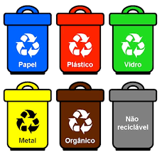

O que é Reciclagem?
A reciclagem é uma prática em que promove a sustentabilidade e ajuda a preservar o meio-ambiente. Ao longo dos últimos anos o crescimento das cidades e o desenvolvimento industrial aumentaram consideravelmente a quantidade de materiais produzidos, o que faz a reciclagem ser uma opção ideal para ajudar a combater os desafios em que o meio-ambiente enfrenta hoje.

Disponível em FreePik
Ao reciclar materiais como plástico, vidro, metal e papel, ajudamos a natureza, além de garantir que eles serão descartados de maneira correta, evitando a contaminação do solo e da água.
Disponível em Calendarr
Ao reciclarmos diminuímos a necessidade de extrair matérias-primas da natureza, como o petróleo para fazer o plástico e a árvore para fazer o papel. Essa redução ajuda a preservar a biodiversidade de algum lugar.
A reciclagem contribuí para redução de emissão de gases do efeito estufa, o que ajuda a combater as mudanças climáticas e promover um futuro melhor para as gerações futuras.

Disponível em FreePik